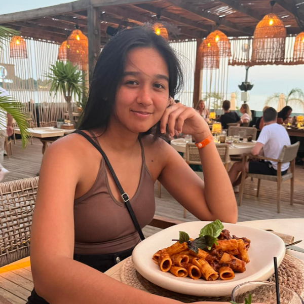

Hey! Jeg er Angelina
Jeg er multimediedesign studerende
Som studerende i Aalborg på linjen multimediedesign har jeg udviklet en brændende passion for UX/UI-design. Med erfaring og uddannelse under armen har jeg udviklet mine evner inden for tekstforfatning, SEO, front-end udvikling og UX/UI-design. Jeg ser hver udfordring som en mulighed for at forbedre og forfine mine færdigheder. Evnen til at skabe og forme en ide til produkt, er en drøm hvis lys aldrig går ud og det er den energi jeg altid vil bringe med mig.
Hvor kom passionen fra?
Siden jeg var lille, har jeg altid været super kreativ og elskede at sy, tegne, filte og hvad ellers jeg kunne få mine hænder i. Jeg fik stor glæde af at kreere og har ikke mistet den lyst siden. Efter jeg blev ældre, fik jeg også en kæmpe interesse for IT og tekniske ting. Der var ikke noget bedre en at kunne bringe mine to favorit ting sammen, at kreere og at nørde.
Bag skærmen er jeg...
Tålmodig, dedikeret og grundig. Uanset om det omhandler arbejde eller om det er når jeg spiller computer hele natten lang eller når jeg bruger flere timer på at udvikle karakterer til min roman.